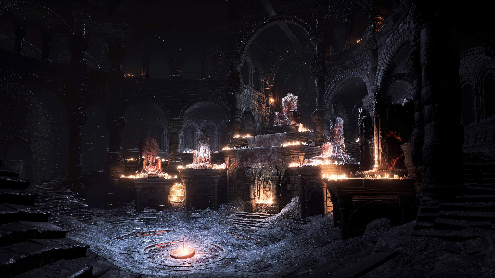
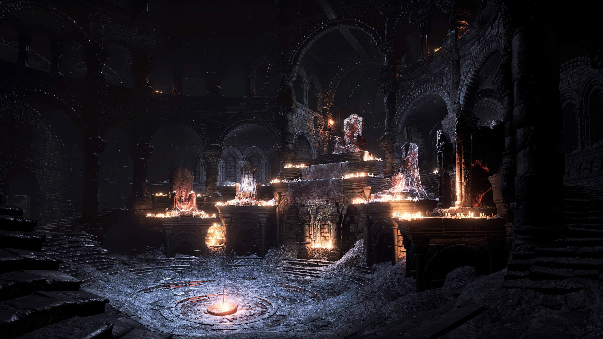
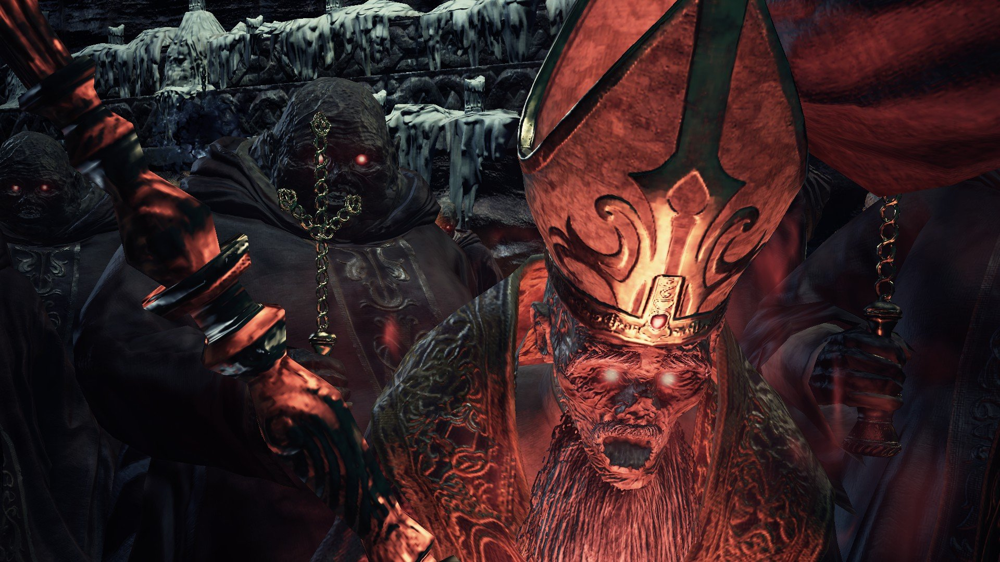
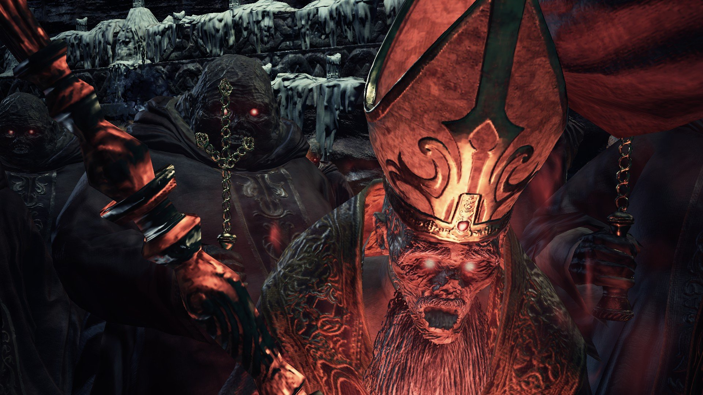
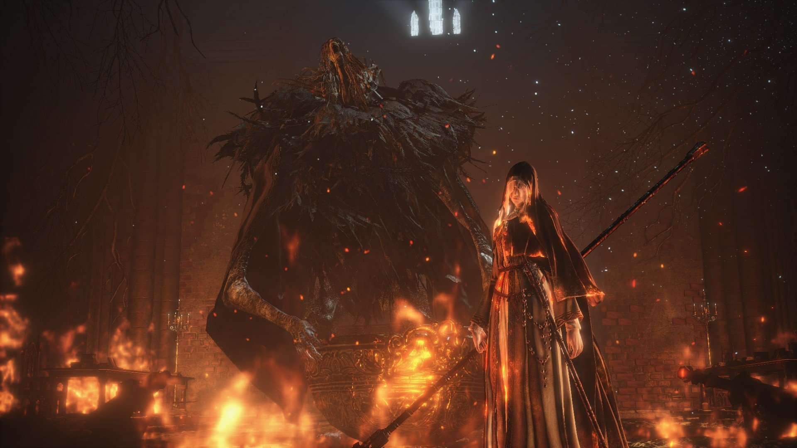
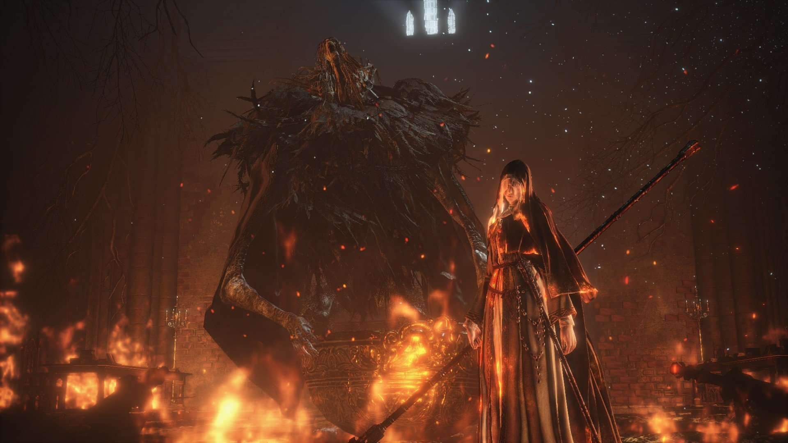

 

 

Dark Souls III se passa vários anos após os acontecimentos dos jogos anteriores. O protagonista se trata de um misterioso herói nascido entre a transição do ciclo do fogo e da escuridão, e seu objetivo é devolver os 5 Lordes das Cinzas aos seus tronos, de onde nunca deveriam ter saído e acender a chama para que o ciclo se complete. Assim, como nos outros jogos da saga, o personagem designado precisa percorrer um caminho árduo e cheio de tristezas.